O nás
Z obchodního hlediska je Radijator Inženjering d.o.o. právním nástupcem řemeslné firmy Radijator, založené v roce 1991, jejíž hlavní činností byly instalace a údržba systémů ústředního vytápění. První teplovodní kotel na tuhá paliva jsme vyrobili v roce 1985.
Společnost působí ve své současné podobě od roku 2002 a rok od roku dosahuje výrazného pokroku, přičemž se vždy snaží být lídrem v přijímání nových technologií, kvalitě produktů a vstupu na nové evropské trhy.
Jak jsme rozšiřovali a zdokonalovali výrobu, dostali jsme se do bodu, kdy vyrábíme kotle pomocí nejpokročilejších technologií dostupných po celém světě. Naše procesy řezání plechu zahrnují řezání laserem, CNC plazmové řezání a CNC děrování. Svařování provádíme pomocí robotů a svařovacích automatů. Meziroční růst výroby je jedním z nejzřetelnějších ukazatelů kvality našich výrobků a služeb.
Dnes Radijator Inženjering zaměstnává více než 350 lidí, včetně 40 vystudovaných strojních inženýrů, kteří každý den pracují na zlepšování kvality výrobků.
Certifikace systému managementu kvality ISO 9001:2008 potvrzuje stálou kvalitu našich produktů i našich obchodních operací.
Radijator Inženjering je srbský výrobce kotlů na biomasu s dlouholetou tradicí, uznávaný pro spolehlivá a technologicky vyspělá řešení vytápění. Vývojem vlastních výrobních procesů a aplikací moderních technologií vytváříme produkty, které splňují nejvyšší požadavky trhu na kvalitu, efektivitu a dlouhou životnost.
Náš výrobní sortiment zahrnuje kotle o výkonech od 6 do 600 kW, určené pro vytápění rodinných domů, bytových a komerčních objektů, veřejných institucí a průmyslových objektů. Náš rozsáhlý sortiment a schopnost stavět kaskádové systémy nám umožňují nabídnout optimální řešení pro každou budovu a každý požadavek.
Kvalita našich produktů vychází z pečlivě vybraných materiálů, precizní výroby a přísné kontroly kvality v každé fázi procesu. Každý kotel vyvíjíme tak, aby poskytoval maximální energetickou účinnost, spolehlivý provoz a dlouhodobé používání s minimálními náklady na údržbu.
Zvláštní pozornost věnujeme inovacím a zlepšování výrobní technologie, abychom zákazníkům poskytli moderní řešení, která kombinují vysokou úroveň automatizace, jednoduché ovládání a maximální využití energie.
Všechny naše produkty navrhujeme a vyrábíme v souladu s platnými evropskými normami a předpisy pro kotle, což potvrzuje jejich bezpečnost, spolehlivost a vysokou kvalitu.
Výběrem kotlů Radijator Inženjering si vyberete srbský výrobek, ověřenou kvalitu a partnera, jehož zkušenosti, odborná podpora a kompletní systémová řešení poskytují spolehlivou podporu po celou dobu životnosti vašeho topného systému.
Společnost s 35 lety zkušeností v navrhování, výrobě a inovacích kotlů, které vytápějí tisíce budov po celé Evropě!
Technologie a kvalita
Výroba podle moderních evropských standardů
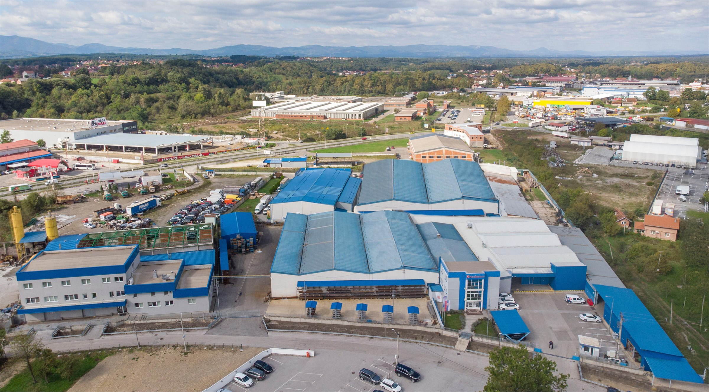
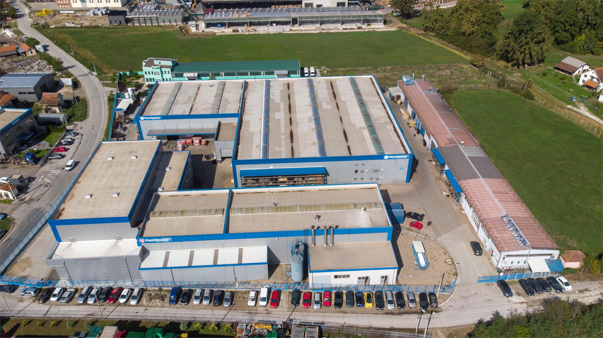
Jak se výroba rozšiřovala a zlepšovala, začali jsme vyrábět kotle s využitím nejnovějších technologií: laserové řezání, CNC plazmové řezání, CNC děrování, robotické svařování a automatické svařovací zařízení.
Dnes Radijator Inzenjering zaměstnává více než 350 lidí, včetně 40 vystudovaných strojních inženýrů, kteří každý den pracují na zlepšování kvality výrobků.
VÝROBNÍ PROGRAM - PRŮMYSL
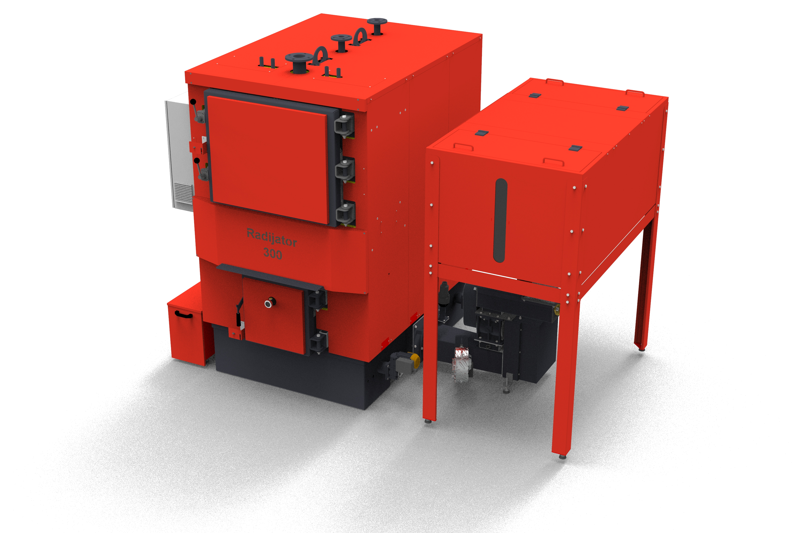
Řada TKAN
Naše průmyslové kotle na biomasu používají kotlové ocelové plechy o tloušťce minimálně 6 mm. Výměník tepla využívá bezešvé kotlové trubky. Účinnost při spalování pelet přesahuje 90 %. Při vyšším provozním zatížení se teplota spalin na výstupu pohybuje od 170 do 190 stupňů Celsia a lze ji vždy zkontrolovat na kontrolním displeji. Dostupné výkony se pohybují od 60 do 300 kW.
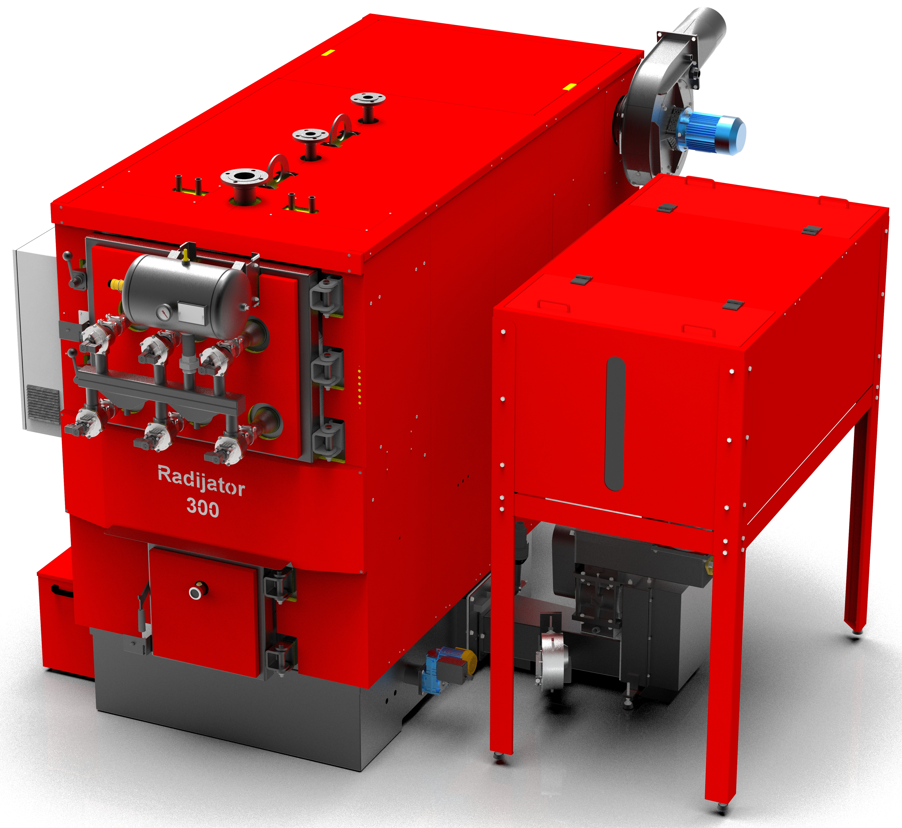
Řada TKAN Integra
Tento průmyslový kotel na biomasu je vylepšenou verzí standardního kotle TKAN. Vyznačuje se žárovzdornou spalovací komorou, pokročilejšími ovládacími prvky a širší řadou pomocných zařízení, které poskytují vyšší spolehlivost, zlepšenou účinnost spalování a širší možnosti použití. Využívá kotlové ocelové plechy o tloušťce minimálně 6 mm a výměník tepla z bezešvých kotlových trubek. Účinnost přesahuje 90 %. Dostupné výkony se pohybují od 80 do 600 kW.
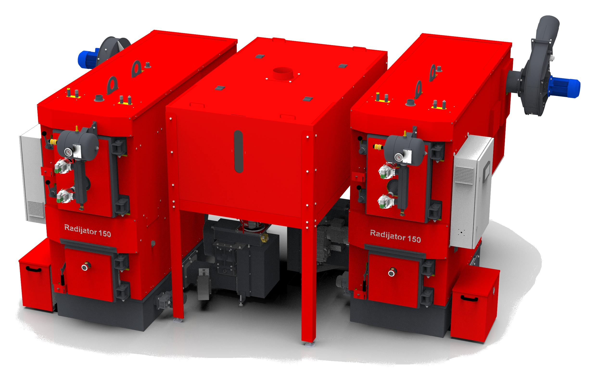
Kaskádové systémy
Kaskádové systémy kombinují dva nebo více kotlů v jediném systému se společným zásobníkem na pelety. Tato konfigurace poskytuje větší celkový instalovaný výkon, spolehlivější provoz, vyvážené rozložení zátěže a vyšší energetickou účinnost systému.
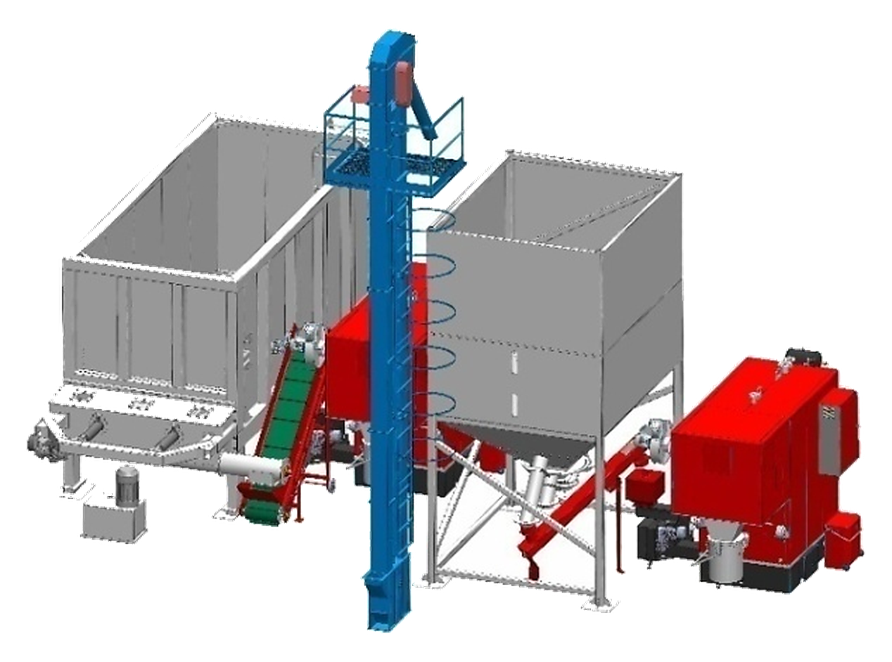
Doplňkové vybavení
Vedle kotlů nabízíme kompletní řadu pomocných zařízení pro plně funkční topný systém. Sortiment zahrnuje skladovací sila na pelety, šnekové dopravníky, elevátory, vyrovnávací nádrže, ovládací prvky a další zařízení potřebná pro spolehlivou dopravu pelet, dávkování a kontrolu, ale i bezpečný a efektivní provoz celého systému.
TKAN TEPLOVODNÍ KOTEL NA PELETY S AUTOMATICKÝM PODÁVÁNÍM PALIVA
(Dostupné výkony: 60-300 kW.) RADIJATOR INŽENJERING vyvinul kotel TKAN, aby na trhu nabídl kotel s mechanickými a tepelnými vlastnostmi speciálně vhodný pro palivo z biomasy. Trh přitom trvale požaduje větší flexibilitu paliva, takže TKAN dokáže spalovat i dřevo, což vyžaduje ruční přikládání.
Ve svém vnějším provedení, rozměrech spalovací komory a otvorech pro plnění paliva a čištění si TKAN zachovává všechny přednosti dřívějších modelů, kterými je RADIJATOR INŽENJERING na trhu známý. Na biomasu je uzpůsobena vodní část kotle a přenos tepla ze spalin do vody přes trubkový výměník. Použití ventilátoru, zajišťujícího nucený tah, vytváří delší spalinovou cestu než u standardních kotlů. To také umožňuje použití zařízení pro proudění spalin známých jako turbulátory, které dále zvyšují účinnost kotle. Turbulátory jsou spirály vyrobené ze speciálního materiálu.
Účinnost při spalování pelet přesahuje 90 %. Za normálních provozních podmínek je teplota spalin na výstupu cca 160 °C a při maximálním výkonu se drží pod 180 °C. Tyto hodnoty lze kdykoli přečíst na displeji.
Všechny součásti vodní části kotle jsou vyrobeny z bezešvých trubek jakosti ST 35.4 a kotlových plechů o tloušťce nejméně 5 mm podle výkonu kotle. Plechy mají označení jakosti 1.0425 podle normy EU, resp. P265GH podle normy EUII. Spalovací komora pracuje na principu spodního podávání: palivo postupuje z dopravní zóny svisle vzhůru do spalovací zóny. Je vyrobena z masivních izolačních materiálů a šedé litiny. Dopravu paliva zajišťují šnekové dopravníky.
Tabulka 1. Dostupné výkony
| TYP KOTLE | TYP KOTLE | TYP KOTLE | TKAN 60 | TKAN 80 | TKAN 100 | TKAN 150 | TKAN 200/250/300 |
|---|---|---|---|---|---|---|---|
| Jednotka | |||||||
| Výkon | Výkon | kW | 60 | 80 | 100 | 150 | 200/250/300 |
| Provozní tlak | Provozní tlak | kPa | 300 | 300 | 300 | 300 | 300 |
| Zkušební tlak | Zkušební tlak | kPa | 450 | 450 | 450 | 450 | 450 |
| Objem vody v kotli | Objem vody v kotli | L (cca) | 276 | 368 | 460 | 690 | 920/1150/1380 |
| Hmotnost kotle | Hmotnost kotle | kg | 655 | 915 | 1073 | 1665 | 2260/2800/3080 |
| Hmotnost sila | Hmotnost sila | kg | 106 | 100 | 110 | 162 | 180/220/220 |
| As | mm | 610 | 610 | 810 | 1010 | 1394 | |
| Rozměry | B | mm | 1020 | 1020 | 1176 | 1456 | 1830 |
| Rozměry | Hs | mm | 1740 | 1736 | 1611 | 1875 | 1822/1822/2070 |
| V | L | 290 | 305 | 680 | 1600/2330/3115 | ||
| Kapacita sila na pelety | Kapacita sila na pelety | kg | 180 | 190 | 410 | 1000/1500/2000 |
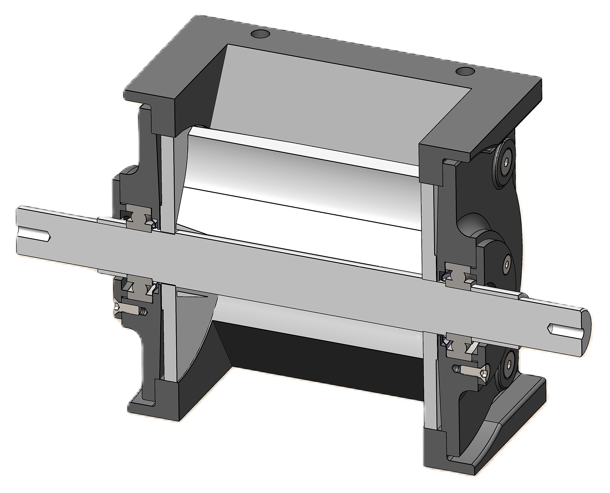
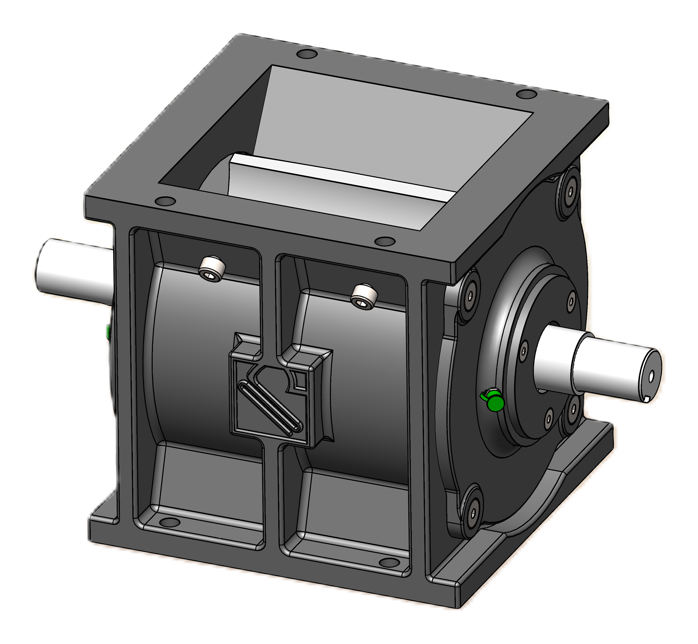
ŘEZ KOTLEM TKAN
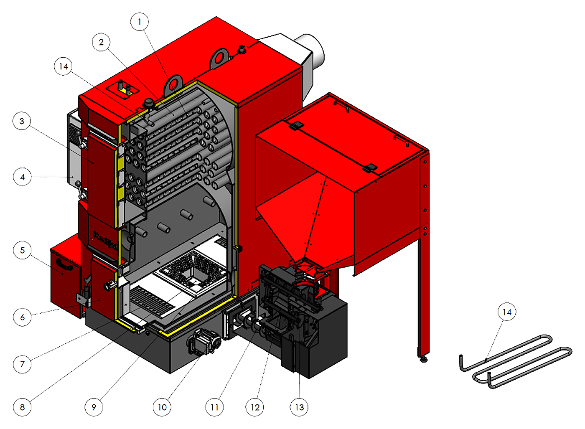
- Turbulátory
- Trubkový výměník tepla
- Přístupová dvířka pro čištění trubkového výměníku tepla a kotle
- Rozvaděč s řídicí jednotkou
- Nádoba na popel
- Přikládací a zapalovací dvířka
- Šnek pro automatické odstraňování popela ze spalovací komory
- Spalovací komora kotle
- Litinové segmenty
- Hnací motor pro šnek, který automaticky čistí spalovací komoru
- Spodní hřídel šnekového dopravníku
- Rotační podavač (rotační ventil)
- Hřídel horního šnekového dopravníku
- Bezpečnostní dochlazovací výměník
ROZMĚRY KOTLE TKAN
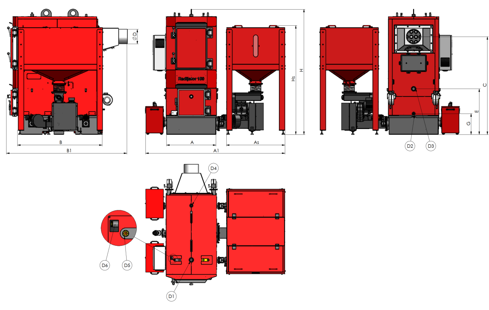
| ROZMĚRY | ROZMĚRY | ROZMĚRY | TKAN 60 | TKAN 80 | TKAN 100 | TKAN 150 | TKAN 200 | TKAN 250 | TKAN 300 | |
|---|---|---|---|---|---|---|---|---|---|---|
| A | mm | mm | 680 | 730 | 730 | 850 | 1005 | 1260 | 1260 | |
| A1 | mm | mm | 1355 | 1788 | 2080 | 2395 | 2945 | 3456 | 3455 | |
| As | mm | mm | 610 | 610 | 810 | 1010 | 1394 | 1394 | 1394 | |
| B | mm | mm | 1020 | 1020 | 1176 - 1286 | 1456 | 1830 | 1830 | 1830 | |
| B1 | mm | mm | 1518 | 1565 | 1727 | 2070 | 2121 | 2546 | 2546 | |
| C | mm | mm | 1125 | 1573 | 1573 | 1681 | 2044 | 2114 | 2114 | |
| ØD | mm | mm | 200 | 200 | 200 | 250 | 250 | 300 | 300 | |
| E | mm | mm | 675 | 417 | 417 | 785 | 675 | 707 | 707 | |
| G | mm | mm | 360 | 389 | 389 | 360 | 465 | 467 | 467 | |
| H | mm | mm | 1564 | 1960 | 1960 | 2151 | 2547 | 2663 | 2663 | |
| Hs | palce | palce | 1740 | 1736 | 1611 | 1875 | 1822 | 1822 | 2070 | |
| D1 | palce | palce | 6/4" | 2" | 2" | 2" | DN80 NP6 | DN80 NP6 | DN80 NP6 | |
| D2 | palce | palce | 6/4" | 2" | 2" | 2" | DN80 NP6 | DN80 NP6 | DN80 NP6 | |
| D3 | palce | palce | 1/2" | 1/2" | 1/2" | 1/2" | 1" | 1" | 1" | |
| D4 | palce | palce | 3/4" | 3/4" | 3/4" | 3/4" | DN40 NP16 | DN40 NP16 | DN40 NP16 | |
| D5 | palce | palce | 1/2" | 1/2" | 1/2" | 1/2" | 1/2" | 1/2" | 1/2" | |
| D6 | palce | palce | 1/2" | 1/2" | 1/2" | 1/2" | 1/2" | 1/2" | 1/2" | |
ROZMĚRY SILA TKAN

| ROZMĚRY | ROZMĚRY | ROZMĚRY | ROZMĚRY | ROZMĚRY | |
|---|---|---|---|---|---|
| A | B | H | V | Kapacita sila na pelety | |
| mm | mm | mm | L | kg | |
| TKAN 80 | 606 | 1020 | 1736 | 290 | 180 |
| TKAN 100 | 810 | 1176 | 1611 | 305 | 190 |
| TKAN 150 | 1010 | 1456 | 1875 | 680 | 410 |
| TKAN 200/250/300 | 1394 | 1830 | 1828 | 1600 | 1000 |
| TKAN 200/250/300 | 1394 | 1830 | 2138 | 2330 | 1500 |
| TKAN 200/250/300 | 1394 | 1830 | 2448 | 3115 | 2000 |
TKAN INTEGRA TEPLOVODNÍ KOTEL NA PELETY S AUTOMATICKÝM PODÁVÁNÍM PALIVA, ODSTRAŇOVÁNÍM PRACHU A CYKLONEM
(Dostupné výkony: 80-600 kW.)
TKAN INTEGRA je nová generace průmyslových kotlů na biomasu vyvinutá jako vylepšení standardního modelu TKAN. Reaguje na poptávku trhu po větší automatizaci, vyšší energetické účinnosti a spolehlivějším provozu, přičemž zachovává všechna osvědčená konstrukční řešení, kterými je RADIJATOR INŽENJERING známý.
TKAN INTEGRA se žáruvzdorným vyložením spalovací komory, vylepšeným systémem spalování, moderním ovládáním a rozsáhlejším standardním vybavením zajišťuje stabilní provoz, maximální využití energie a dlouhou životnost všech klíčových komponentů. Konstrukce kotle využívá vysoce kvalitní kotlové ocelové plechy o tloušťce minimálně 6 mm a trubkový výměník využívá bezešvé kotlové trubky zajišťující vysokou mechanickou pevnost, spolehlivost a dlouhou životnost systému.
Žáruvzdorná spalovací komora je jednou z klíčových předností modelu TKAN INTEGRA. Tato konstrukce umožňuje úplné a stabilní spalování paliva, minimální emise škodlivých plynů a prachových částic a maximální využití energie v peletách. Zároveň ocelové komponenty kotle nejsou přímo vystaveny plameni, což výrazně prodlužuje životnost kotle.
Cyklon snižuje množství částic vstupujících do komína. Větší konfigurace používají multicyklon s odstředivým ventilátorem. Výrobce doporučuje zejména při použití pneumatického čištění výměníku cyklon, který vytlačí z kotle další popel a saze. Větší modely TKAN Integra využívají multicyklon s odstředivým ventilátorem. Konkrétně TKAN 80 Integra a TKAN 100 Integra mají ventilátor na odvodu spalin, zatímco TKAN 150 Integra, TKAN 200 Integra, TKAN 250 Integra a TKAN 300 Integra mají multicyklon s odstředivým ventilátorem.
Některé konfigurace TKAN používají ventilátor na straně spalin, zatímco větší systémy mohou mít multicyklon vybavený odstředivým ventilátorem. To je důležité při návrhu kompletního komínového systému, zejména tam, kde je několik kotlů, delší kouřovod, cyklon nebo multicyklon, více kolen nebo společný komín.
Kotle TKAN INTEGRA standardně obsahují systém automatického čištění prostoru kolem spalovací komory. Stlačený vzduch automaticky čistí trubkový výměník tepla. Periodické pulsy vzduchu odstraňují usazeniny sazí ze spalinových trubek, udržují vysokou účinnost kotle a výrazně snižují potřebu ruční údržby.
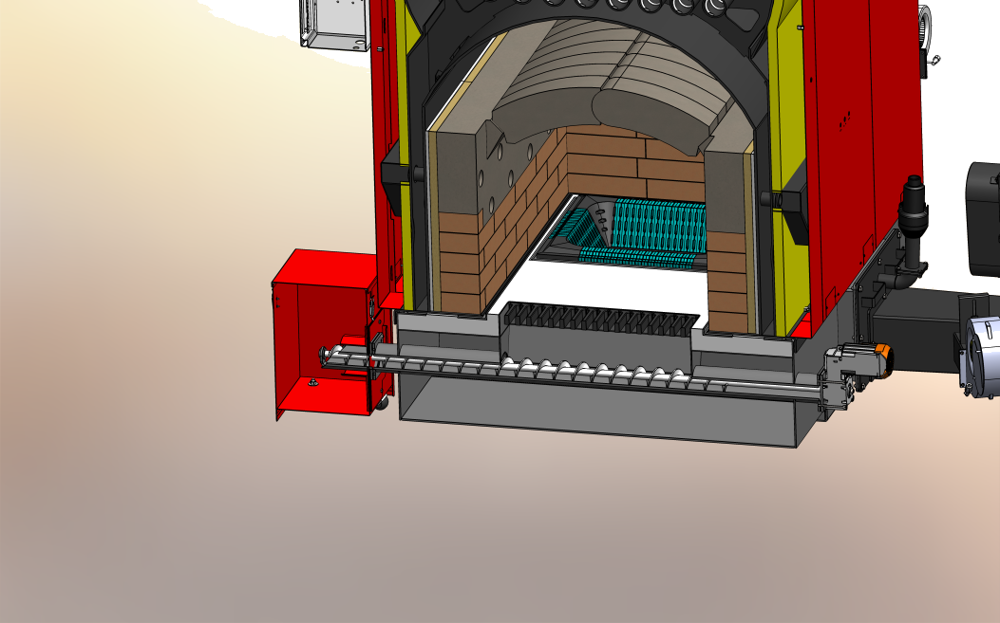
| TYP KOTLE | TYP KOTLE | TYP KOTLE | TKAN 80 Integra | TKAN 100 Integra | TKAN 150 Integra | TKAN 200/250/300 Integra |
|---|---|---|---|---|---|---|
| Jednotka | ||||||
| Výkon | Výkon | kW | 80 | 100 | 150 | 200/250/300 |
| Provozní tlak | Provozní tlak | kPa | 300 | 300 | 300 | 300 |
| Zkušební tlak | Zkušební tlak | kPa | 450 | 450 | 450 | 450 |
| Objem vody v kotli | Objem vody v kotli | L (cca) | 368 | 460 | 690 | 920/1150/1380 |
| Hmotnost kotle | Hmotnost kotle | kg | 1191 | 1415 | 2288 | 3240/5293/5605 |
| Hmotnost sila | Hmotnost sila | kg | 100 | 165 | 165 | 225 |
| As | mm | 606 | 1006 | 1006 | 1394 | |
| Rozměry | B | mm | 1020 | 1456 | 1456 | 1830 |
| Rozměry | Hs | mm | 1736 | 1872 | 1872 | 1822 |
| V | L | 290 | 680 | 680 | 1600/2330/3115 | |
| Kapacita sila na pelety | Kapacita sila na pelety | kg | 180 | 410 | 410 | 1000/1500/2000 |
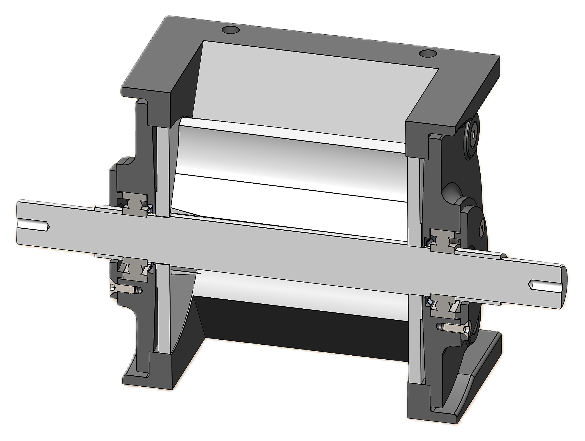
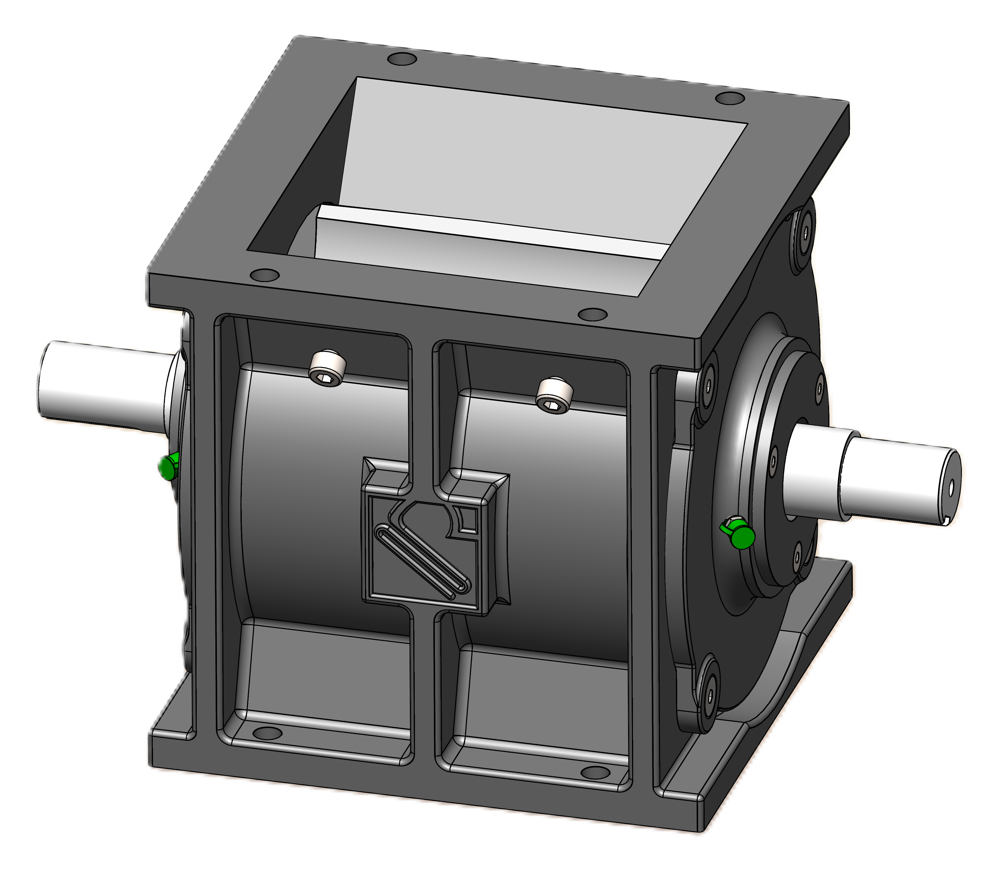
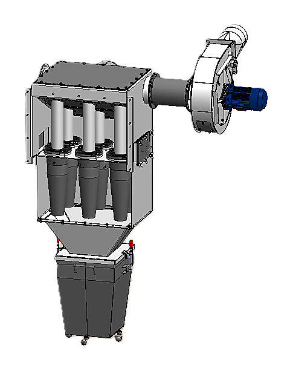
ŘEZ KOTLEM TKAN INTEGRA
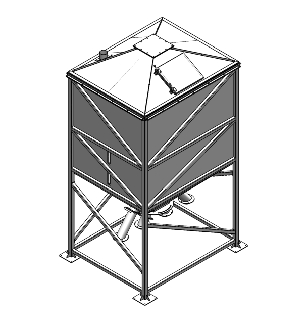
- Turbulátory
- Trubkový výměník tepla
- Přístupová dvířka pro čištění trubkového výměníku tepla a kotle
- Rozvaděč s řídicí jednotkou
- Vzdušník stlačeného vzduchu
- Pulzní solenoidový ventil
- Přikládací a zapalovací dvířka
- Nádoba na popel
- Žáruvzdorná vyzdívka spalovací komory
- Šnek pro automatické odstraňování popela ze spalovací komory
- Hnací motor pro šnek, který automaticky čistí spalovací komoru
- Litinové segmenty
- Spalovací komora kotle
- Spodní hřídel šnekového dopravníku
- Rotační podavač (rotační ventil)
- Hřídel horního šnekového dopravníku
- Multicyklonový odstředivý ventilátor
- Multicyklon
- Bezpečnostní dochlazovací výměník
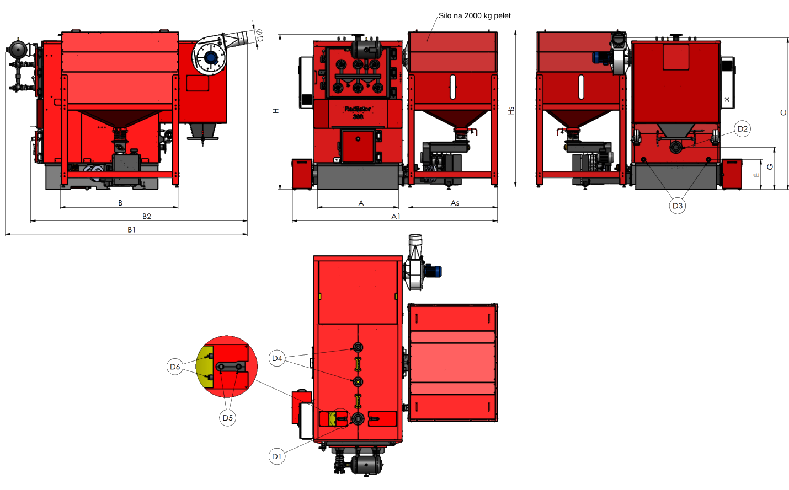
| ROZMĚRY | ROZMĚRY | TKAN 80 Integra | TKAN 100 Integra | TKAN 150 Integra | TKAN 200 Integra | TKAN 250 Integra | TKAN 300 Integra | |
|---|---|---|---|---|---|---|---|---|
| A | mm | 730 | 730 | 850 | 1005 | 1380 | 1380 | |
| A1 | mm | 1788 | 2276 | 2394 | 2942 | 3200 | 3200 | |
| As | mm | 606 | 1006 | 1006 | 1394 | 1394 | 1394 | |
| B | mm | 1020 | 1456 | 1456 | 1830 | 1830 | 1830 | |
| B1 | mm | 1655 | 1817 | 3099 | 3386 | 3755 | 3755 | |
| B2 | mm | 1595 | 1767 | 2729 | 2988 | 3360 | 3360 | |
| C | mm | 1507 | 1507 | 2080 | 2515 | 2312 | 2312 | |
| ØD | mm | 180 | 200 | 190 | 190 | 190 | 190 | |
| E | mm | 390 | 390 | 359 | 465 | 467 | 467 | |
| G | mm | 417 | 417 | 784 | 675 | 707 | 707 | |
| H | mm | 1960 | 1960 | 2151 | 2547 | 2413 | 2413 | |
| Hs | palce | 1736 | 1872 | 1872 | 1822 | 1822 | 1822 | |
| D1 | palce | 2" | 2" | 2" | DN80 NP6 | DN80 NP6 | DN80 NP6 | |
| D2 | palce | 2" | 2" | 2" | DN80 NP6 | DN80 NP6 | DN80 NP6 | |
| D3 | palce | 1/2" | 1/2" | 1/2" | DN40 NP16 | DN40 NP16 | DN40 NP16 | |
| D4 | palce | 3/4" | 3/4" | 3/4" | DN40 NP16 | DN40 NP16 | DN40 NP16 | |
| D5 | palce | 1/2" | 1/2" | 1/2" | 1" | 1" | 1" | |
| D6 | palce | 1/2" | 1/2" | 1/2" | 1/2" | 1/2" | 1/2" | |
| Hmotnostní průtok (kg/h) | Hmotnostní průtok (kg/h) | 313 | 468 | 878 | 1116 | 1353 | 1461 |
ROZMĚRY SILA TKAN INTEGRA
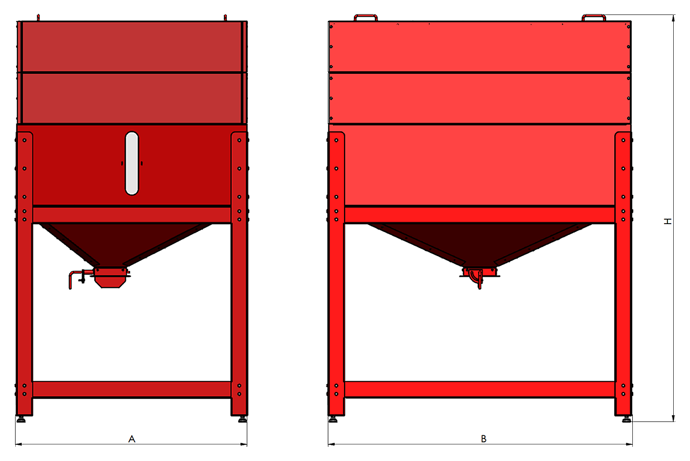
| ROZMĚRY | ROZMĚRY | ROZMĚRY | ROZMĚRY | ROZMĚRY | |
|---|---|---|---|---|---|
| A | B | H | V | Kapacita sila na pelety | |
| mm | mm | mm | L | kg | |
| TKAN 80 Integra | 606 | 1020 | 1736 | 290 | 180 |
| TKAN 100 Integra | 1006 | 1456 | 1872 | 680 | 410 |
| TKAN 150 Integra | 1006 | 1456 | 1872 | 680 | 410 |
| TKAN 200/250/300 Integra | 1394 | 1830 | 1828 | 1600 | 1000 |
| TKAN 200/250/300 Integra | 1394 | 1830 | 2138 | 2330 | 1500 |
| TKAN 200/250/300 Integra | 1394 | 1830 | 2448 | 3115 | 2000 |
UMÍSTĚNÍ KOTLŮ TKAN A TKAN INTEGRA V KOTELNĚ
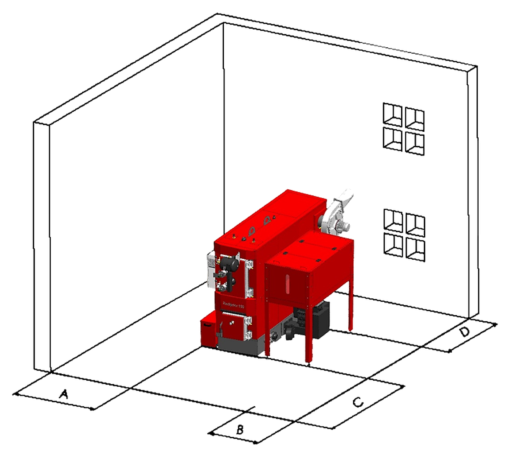
Umístění kotle v kotelně
| ROZMĚRY | ROZMĚRY | ROZMĚRY | ROZMĚRY | |
|---|---|---|---|---|
| Typ kotle | A (mm) | B (mm) | C (mm) | D (mm) |
| TKAN 60 | 100 | 400 | 1000 | 800 |
| TKAN 80 | 500 | 400 | 1000 | 800 |
| TKAN 100 | 500 | 400 | 1000 | 800 |
| TKAN 150 | 500 | 550 | 1000 | 1000 |
| TKAN 200 | 600 | 650 | 1000 | 1000 |
| TKAN 250 | 600 | 900 | 1000 | 1100 |
| TKAN 300 | 600 | 900 | 1000 | 1100 |
| TKAN 80 Integra | 500 | 400 | 1000 | 800 |
| TKAN 100 Integra | 500 | 400 | 1000 | 800 |
| TKAN 150 Integra | 500 | 550 | 1000 | 1000 |
| TKAN 200 Integra | 600 | 650 | 1000 | 1000 |
| TKAN 250 Integra | 600 | 900 | 1000 | 1100 |
| TKAN 300 Integra | 600 | 900 | 1000 | 1100 |
Kotelna musí mít ochranu proti zamrznutí. Kotel musí stát na nehořlavém povrchu. V tabulce a na obrázku jsou uvedeny doporučené vzdálenosti na všech čtyřech stranách kotle od stěn kotelny nebo jiných pevných předmětů, jako je akumulační nádrž.
KASKÁDOVÉ SYSTÉMY
Radijator Inženjering vyvinul řadu kotlů TKAN především pro spalování biomasy včetně pelet a ovocných pecek a dřeva. Zapojením těchto kotlů do kaskádových systémů vzniká vysoce výkonné a flexibilní řešení vytápění velkých budov.
Použití kotlů TKAN v kaskádě
- Kaskádové systémy nejčastěji využívají průmyslové modely s vyššími výkony, jako jsou modely TKAN 100, 150, 200, 250 a 300 kW.
- Vysoké nároky na výkon: Zapojením dvou kotlů TKAN 300 například do kaskády vznikne systém o celkovém výkonu 600 kW vhodný pro vytápění hotelů, výrobních hal nebo obytných komplexů.
- Modularita a flexibilita: Na podzim a na jaře pracuje pouze jeden kotel TKAN s optimálním zatížením, zatímco druhý se spouští až při výrazném poklesu venkovní teploty.
Vlastnosti kaskádových systémů TKAN
Modularita a flexibilita: Na podzim a na jaře pracuje pouze jeden kotel TKAN s optimálním zatížením, zatímco druhý se spouští až při výrazném poklesu venkovní teploty.
Řízení a automatizace: Kotle TKAN mají pokročilou elektroniku, která umožňuje synchronizovaný provoz prostřednictvím externích kaskádových regulátorů. Ovládací prvky sledují teplotu v hydraulickém separátoru a určují, který kotel se má spustit.
Nepřetržité zásobování palivem: Průmyslové kotle TKAN jsou dodávány s denními sily, např. s objemem 800 litrů, které lze pomocí přídavných šnekových dopravníků napojit na jediné velké centrální silo na pelety zásobující celou kaskádu.
Spolehlivost a kontinuita: Pokud jeden kotel vyžaduje čištění popela nebo běžnou údržbu, hydraulický systém a kaskádové ovládání umožní druhému kotli pokračovat v provozu bez přerušení, takže budova má vždy vytápění.
DOPLŇKOVÉ VYBAVENÍ
Pro spolehlivý a efektivní provoz instalací průmyslových kotlů může systém obsahovat další komponenty přizpůsobené požadavkům budovy a provozním podmínkám.
Doplňkové vybavení zahrnuje systémy automatického dávkování a dopravy paliva, sklad pelet, automatizované řízení provozu a zařízení pro připojení kotlů a jejich kaskádové řízení.
Řešení navrhujeme podle výkonu kotelny, požadované doby samostatného provozu a dostupného prostoru s cílem dosáhnout vysokého stupně automatizace, spolehlivosti a optimální spotřeby paliva.
- Dva šnekové dopravníky, každý s vlastním elektrickým pohonem, zajišťují automatické odstraňování popela v prostoru spalovací komory. Přenášejí popel do dvou nádob, které vyžadují pravidelné vyprazdňování.
- Systém solenoidových ventilů na přístupových dvířkách trubkového výměníku tepla periodicky uvolňuje stlačený vzduch k čištění popela a sazí z trubek kotle. Systém vyžaduje přívod stlačeného vzduchu o vhodné kapacitě a ovládací prvky pro řízení procesu.
- Pro snížení emisí polétavých částic popela výrobce doporučuje instalaci cyklonu, zejména tam, kde zákazník instaloval také pneumatický čisticí systém.
- Pro velké systémy se spotřebou od několika stovek kilogramů do několika tun pelet za den výrobce doporučuje velké silo s korečkovým elevátorem. Šnekové dopravníky jej spojují s malým silem a snímače minimální a maximální hladiny v malém sile automatizují celý proces dodávky.
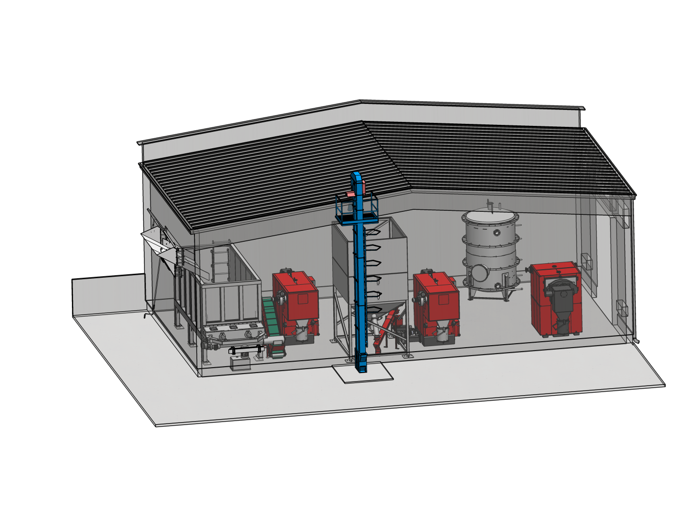
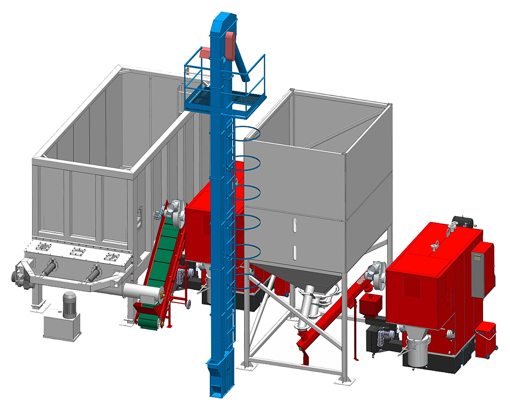
VĚTŠÍ DENNÍ SILO
Standardní kotle TKAN mají denní silo. Pro větší systémy může výrobce vyrobit větší vnější sila s vlastními rozměry. V závislosti na požadavcích systému mohou sila o kapacitě několika desítek tun obsahovat korečkový elevátor.
Velké vnější silo je propojeno s denním silem kotle šnekovými dopravníky. Automatické doplňování řídí snímače minimální a maximální hladiny. Pro skladování většího množství pelet lze použít také velkoobjemové vaky Jumbo.
U novějších modelů TKAN 60-300 má standardní denní silo objem 800 litrů a lze jej napojit na velké externí silo. Připojení může probíhat ze strany nebo zepředu v závislosti na uspořádání zařízení a dostupném prostoru. Pořadí dodávky paliva je:
Velké centrální silo, šnekový dopravník, denní silo TKAN, šnek do spalovací komory
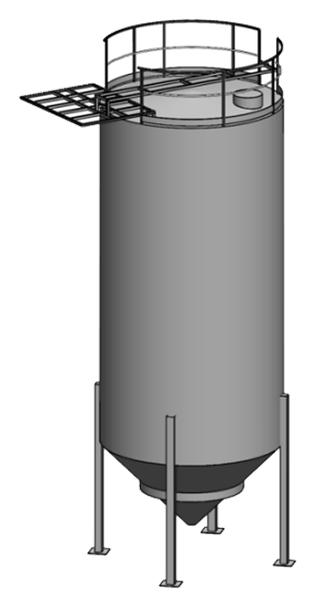
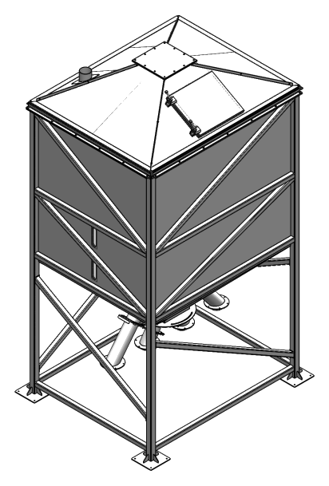
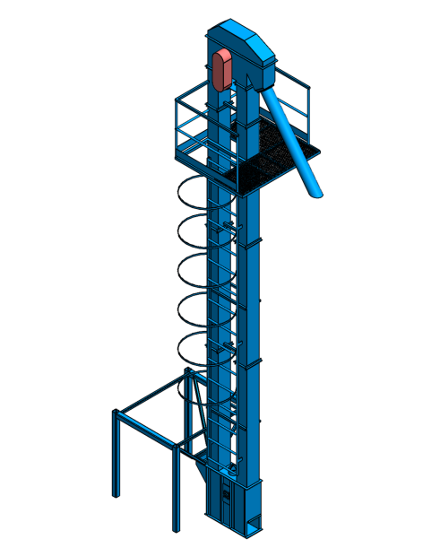
AUTOMATICKÁ DOPRAVA PELET
Výrobce zajišťuje šnekové dopravníky, pohony a motory šnekových dopravníků, propojení velkého sila s denním silem, automatické doplňování denního sila a čidla minimální a maximální hladiny v denním sile.
Pro velké soustavy výrobce doporučuje velké silo s korečkovým elevátorem, šnekovými dopravníky a automatickým doplňováním denního sila řízeným snímači minimální a maximální hladiny. Pro skladování většího množství pelet lze použít také velkoobjemové vaky Jumbo.
Řídicí jednotka kotle může řídit motor šnekového dopravníku pro dopravu pelet z velkého sila.
To je užitečné zejména pro kaskádu několika kotlů TKAN, protože umožňuje návrh centrálního rozvodu pelet.
Automatické doplňování denního sila využívá snímače minimální a maximální hladiny. Na MIN začíná doprava pelet. Na MAX se doprava pelet zastaví. Kotel si tedy automaticky vyžádá palivo z centrálního úložiště a nevyžaduje žádné ruční doplňování.
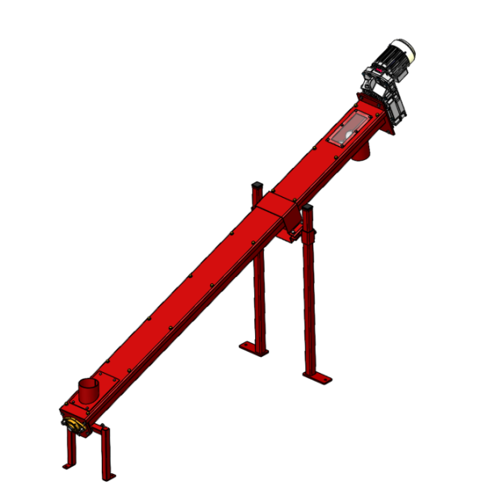
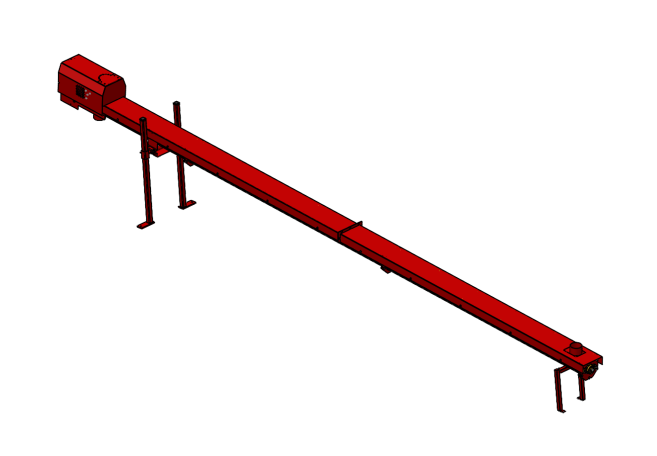